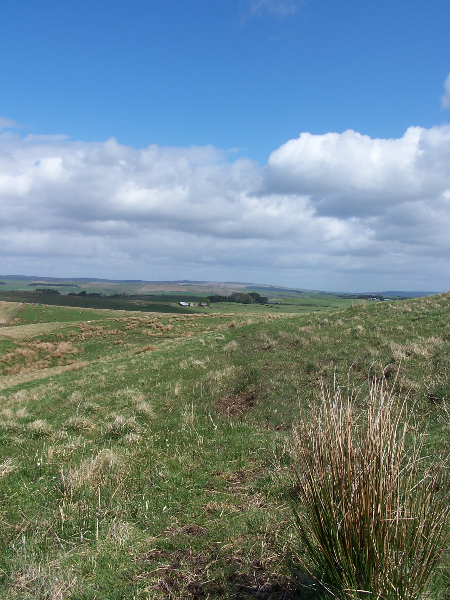
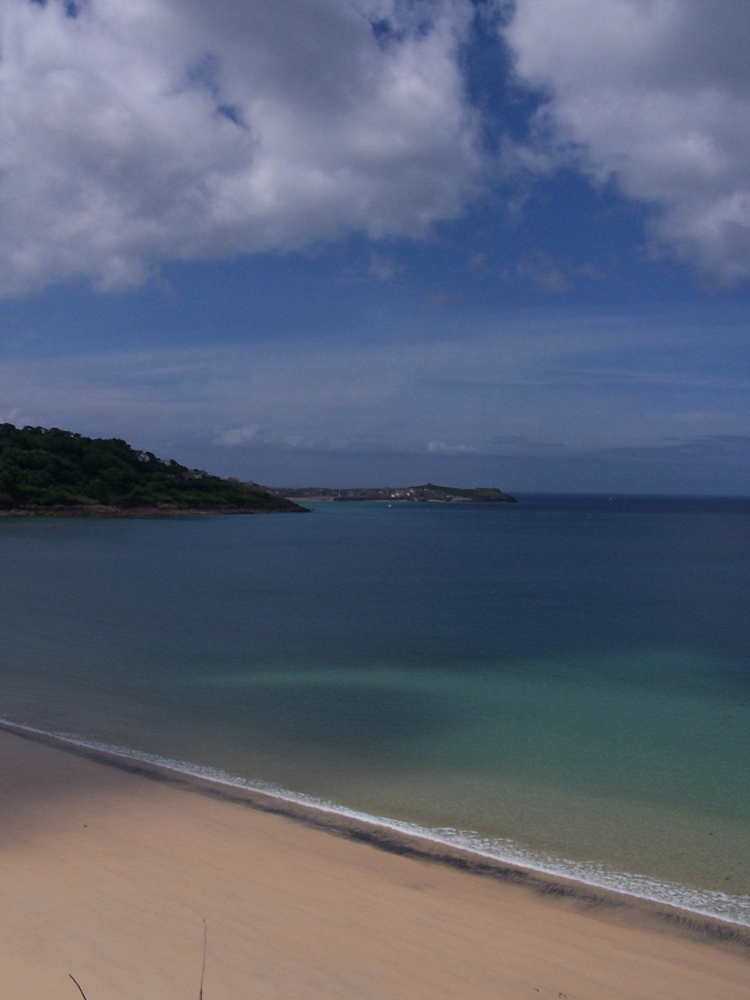
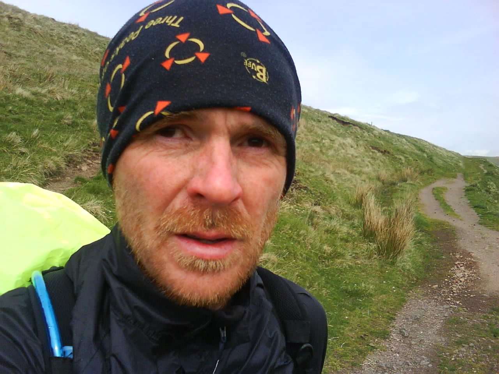
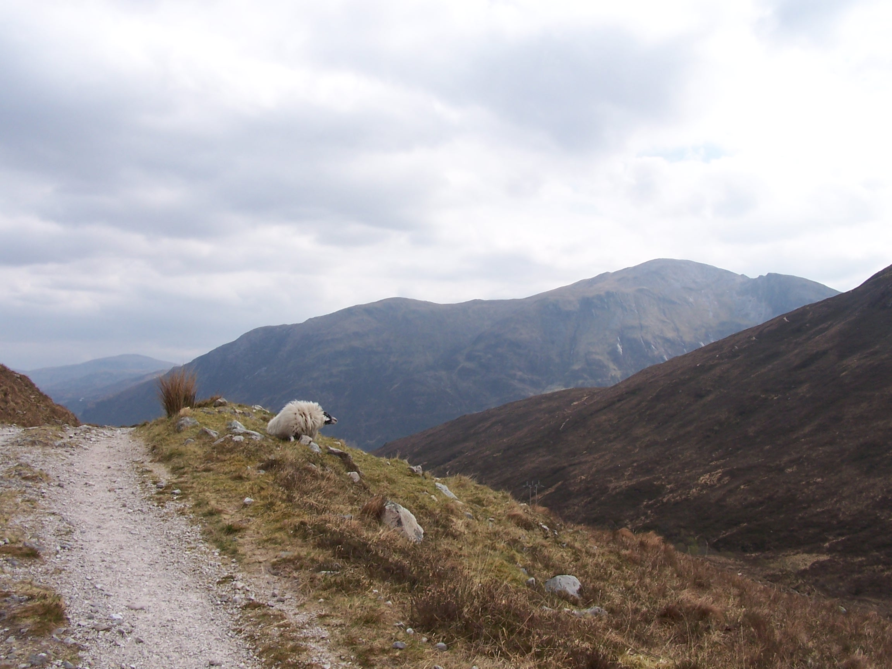
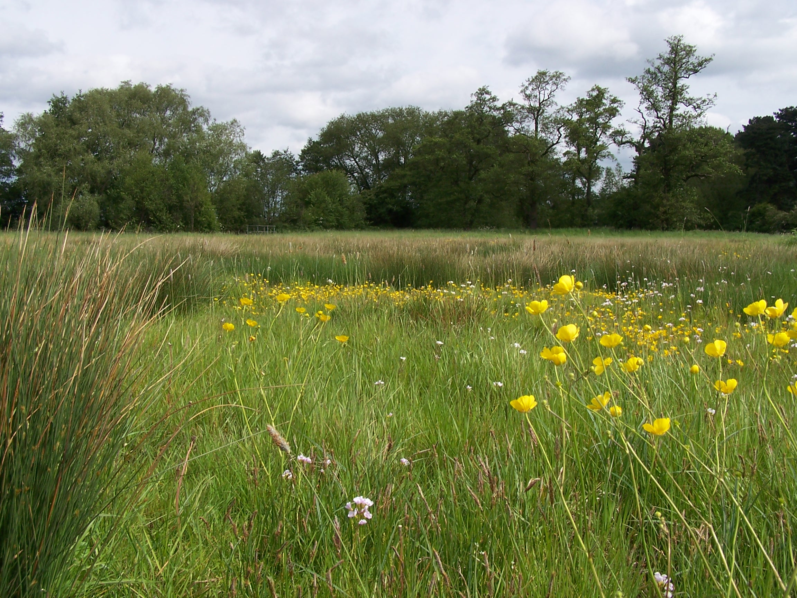
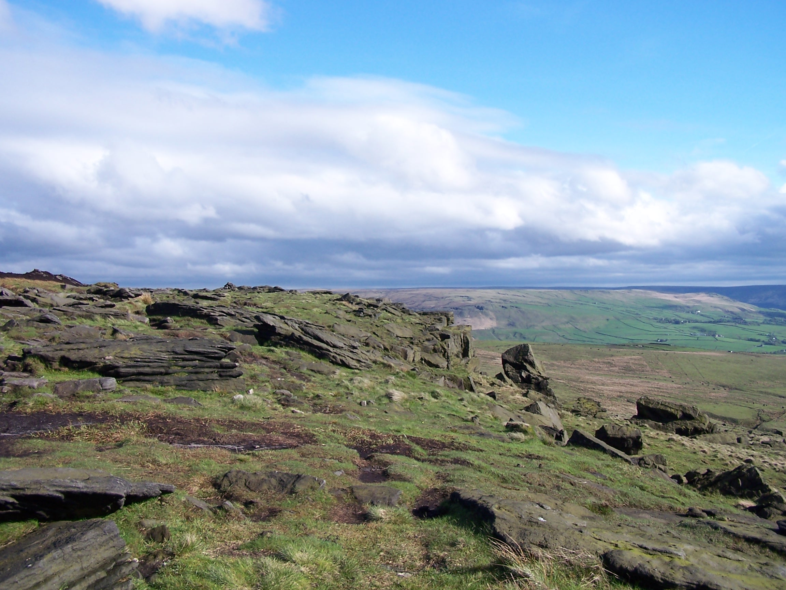
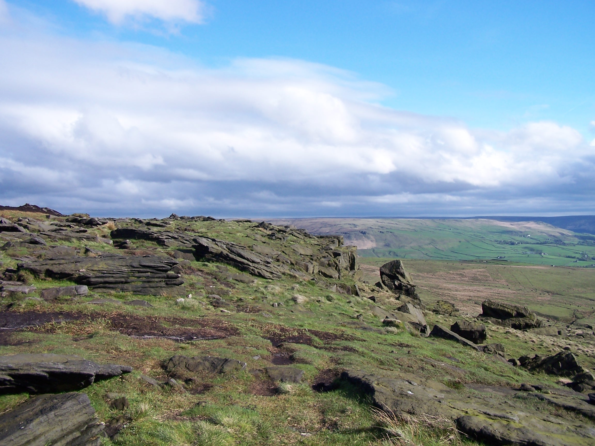

Walking John O’Groats to Lands End
Afterthoughts
Its been
a few months now since I stood at the Lands End Fingerboard and I
often find myself thinking about some of the experiences I've had, the
places that I have stood and
paths that I've walked. Trying to visualise the full extent of the
walk in one go isn't possible. It has been such a truely huge
undertaking. I feel so fortunate to have had the opportunity to
have done this. The memories and sense of achievement will be with me
for life.
One thing that a walk along the length of mainland
Britain did was to help me feel part of the country that I live in and
to gain a greater perspective of the distances between places and
towns. Its hard to visualise from any map that the distance from the
northern most coast to Inverness is not that far different to the
distance between Glasgow and Carlisle. There are some days and places
that stand out in the memory such as the sun coming out on the first
morning, looking back at the North Sea as it was lost from view, the
sheer expance of openness in the flow country and the feeling as I hit
the first hundred miles, just to name a few. There are endless memories
that give me feel-good thoughts and make me smile as I carry on
with the mundane chores of each day.
In general I was very
lucky with the weather, it was sunny more often than not and nice and
warm when it mattered too. The effort put into the route planning paid
off with my only finding myself lost on a couple of occasions.

 

I do now find
myself missing the sense of total freedom, the open spaces and the
daily mission. I now have to consider my next adventure. A
bike ride is possible, maybe the Pennine Cycleway as a short adventure
or the North Sea Cycleway as something much more serious.
Since
finishing the walk I have found work as a postman. I enjoy this job far
more than the office based work that I quit. It has meant that I
haven't stopped walking though.
If you are considering this adventure yourself then go for it. You can do it and like me you will be glad you did.